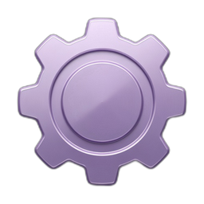
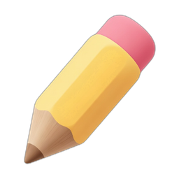
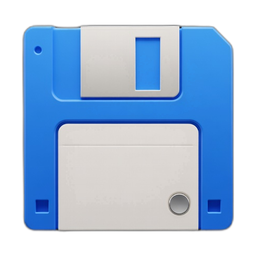
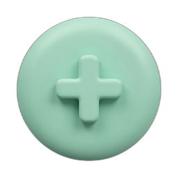

Kārts fona nokrāsa — galvenais vizuālais stils.
Piem. bilde no Grok Imagine. Bez fona kārts izmanto tikai krāsu.
Fine-grained token ar Contents: Read and write priekš kontesksta-logs-standalone repo. Izveidot token →